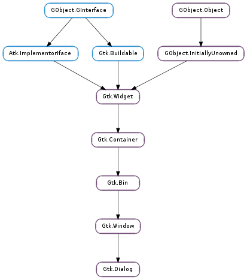

| static | new() |
| add_action_widget(child, response_id) | |
| add_button(button_text, response_id) | |
| add_buttons(*args) | |
| get_action_area() | |
| get_content_area() | |
| get_response_for_widget(widget) | |
| get_widget_for_response(response_id) | |
| response(response_id) | |
| run() | |
| set_alternative_button_order_from_array(new_order) | |
| set_default_response(response_id) | |
| set_response_sensitive(response_id, setting) |
None
| Name | Parameters | Return | Description |
|---|---|---|---|
| close | The ::close signal is a keybinding signal which gets emitted when the user uses a keybinding to close the dialog. The default binding for this signal is the Escape key. | ||
| response | int | Emitted when an action widget is clicked, the dialog receives a delete event, or the application programmer calls Gtk.Dialog.response (). On a delete event, the response ID is Gtk.ResponseType.DELETE_EVENT. Otherwise, it depends on which action widget was clicked. |
| Name | Type | Access |
|---|---|---|
| window | Gtk.Window | r |
Bases: Gtk.Window, Gtk.Container
Dialog boxes are a convenient way to prompt the user for a small amount of input, e.g. to display a message, ask a question, or anything else that does not require extensive effort on the user’s part.
GTK+ treats a dialog as a window split vertically. The top section is a Gtk.VBox, and is where widgets such as a Gtk.Label or a Gtk.Entry should be packed. The bottom area is known as the action_area. This is generally used for packing buttons into the dialog which may perform functions such as cancel, ok, or apply.
Gtk.Dialog boxes are created with a call to Gtk.Dialog.new () or Gtk.Dialog.new_with_buttons (). Gtk.Dialog.new_with_buttons () is recommended; it allows you to set the dialog title, some convenient flags, and add simple buttons.
If ‘dialog’ is a newly created dialog, the two primary areas of the window can be accessed through Gtk.Dialog.get_content_area () and Gtk.Dialog.get_action_area (), as can be seen from the example below.
A ‘modal’ dialog (that is, one which freezes the rest of the application from user input), can be created by calling Gtk.Window.set_modal () on the dialog. Use the GTK_WINDOW() macro to cast the widget returned from Gtk.Dialog.new () into a Gtk.Window. When using Gtk.Dialog.new_with_buttons () you can also pass the Gtk.DialogFlags.MODAL flag to make a dialog modal.
If you add buttons to Gtk.Dialog using Gtk.Dialog.new_with_buttons (), Gtk.Dialog.add_button (), Gtk.Dialog.add_buttons (), or Gtk.Dialog.add_action_widget (), clicking the button will emit a signal called Gtk.Dialog ::response with a response ID that you specified. GTK+ will never assign a meaning to positive response IDs; these are entirely user-defined. But for convenience, you can use the response IDs in the Gtk.ResponseType enumeration (these all have values less than zero). If a dialog receives a delete event, the Gtk.Dialog ::response signal will be emitted with a response ID of Gtk.ResponseType.DELETE_EVENT.
If you want to block waiting for a dialog to return before returning control flow to your code, you can call Gtk.Dialog.run (). This function enters a recursive main loop and waits for the user to respond to the dialog, returning the response ID corresponding to the button the user clicked.
For the simple dialog in the following example, in reality you’d probably use Gtk.MessageDialog to save yourself some effort. But you’d need to create the dialog contents manually if you had more than a simple message in the dialog.
Simple Gtk.Dialog usage
/&ast Function to open a dialog box displaying the message provided. &ast/
void
quick_message (gchar *message)
{
GtkWidget *dialog, *label, *content_area;
/&ast Create the widgets &ast/
dialog = gtk_dialog_new_with_buttons ("Message",
main_application_window,
GTK_DIALOG_DESTROY_WITH_PARENT,
_("_OK"),
GTK_RESPONSE_NONE,
NULL);
content_area = gtk_dialog_get_content_area (GTK_DIALOG (dialog));
label = gtk_label_new (message);
/&ast Ensure that the dialog box is destroyed when the user responds &ast/
g_signal_connect_swapped (dialog,
"response",
G_CALLBACK (gtk_widget_destroy),
dialog);
/&ast Add the label, and show everything we've added to the dialog &ast/
gtk_container_add (GTK_CONTAINER (content_area), label);
gtk_widget_show_all (dialog);
}
The Gtk.Dialog implementation of the Gtk.Buildable interface exposes the vbox and action_area as internal children with the names “vbox” and “action_area”.
Gtk.Dialog supports a custom <action-widgets> element, which can contain multiple <action-widget> elements. The “response” attribute specifies a numeric response, and the content of the element is the id of widget (which should be a child of the dialogs action_area ).
AGtkDialogUI definition fragment.
<object class="GtkDialog" id="dialog1">
<child internal-child="vbox">"
<object class="GtkVBox" id="vbox">
<child internal-child="action_area">
<object class="GtkHButtonBox" id="button_box">
<child>
<object class="GtkButton" id="button_cancel" />
</child>
<child>
<object class="GtkButton" id="button_ok" />
</child>
</object>
</child>
</object>
</child>
<action-widgets>
<action-widget response="3">button_ok</action-widget>
<action-widget response="-5">button_cancel</action-widget>
</action-widgets>
</object>
| Returns: | the new dialog as a Gtk.Widget |
|---|---|
| Return type: | Gtk.Widget |
Creates a new dialog box.
Widgets should not be packed into this Gtk.Window directly, but into the vbox and action_area, as described above.
| Parameters: |
|
|---|
Adds an activatable widget to the action area of a Gtk.Dialog, connecting a signal handler that will emit the Gtk.Dialog ::response signal on the dialog when the widget is activated. The widget is appended to the end of the dialog’s action area. If you want to add a non-activatable widget, simply pack it into the action_area field of the Gtk.Dialog struct.
| Parameters: | |
|---|---|
| Returns: | the Gtk.Button widget that was added |
| Return type: |
Adds a button with the given text and sets things up so that clicking the button will emit the Gtk.Dialog ::response signal with the given response_id. The button is appended to the end of the dialog’s action area. The button widget is returned, but usually you don’t need it.
The add_buttons() method adds several buttons to the Gtk.Dialog using the button data passed as arguments to the method. This method is the same as calling the Gtk.Dialog.add_button() repeatedly. The button data pairs - button text (or stock ID) and a response ID integer are passed individually. For example:
>>> dialog.add_buttons(Gtk.STOCK_OPEN, 42, "Close", Gtk.ResponseType.CLOSE)
will add “Open” and “Close” buttons to dialog.
| Returns: | the action area. |
|---|---|
| Return type: | Gtk.Widget |
Returns the action area of dialog.
| Returns: | the content area Gtk.Box. |
|---|---|
| Return type: | Gtk.Widget |
Returns the content area of dialog.
| Parameters: | widget (Gtk.Widget) – a widget in the action area of dialog |
|---|---|
| Returns: | the response id of widget, or Gtk.ResponseType.NONE if widget doesn’t have a response id set. |
| Return type: | int |
Gets the response id of a widget in the action area of a dialog.
| Parameters: | response_id (int) – the response ID used by the dialog widget |
|---|---|
| Returns: | the widget button that uses the given response_id, or None. |
| Return type: | Gtk.Widget |
Gets the widget button that uses the given response ID in the action area of a dialog.
| Parameters: | response_id (int) – the response ID |
|---|
Emitted when an action widget is clicked, the dialog receives a delete event, or the application programmer calls Gtk.Dialog.response (). On a delete event, the response ID is Gtk.ResponseType.DELETE_EVENT. Otherwise, it depends on which action widget was clicked.
| Returns: | response ID |
|---|---|
| Return type: | int |
Blocks in a recursive main loop until the dialog either emits the Gtk.Dialog ::response signal, or is destroyed. If the dialog is destroyed during the call to Gtk.Dialog.run (), Gtk.Dialog.run () returns Gtk.ResponseType.NONE. Otherwise, it returns the response ID from the ::response signal emission.
Before entering the recursive main loop, Gtk.Dialog.run () calls Gtk.Widget.show () on the dialog for you. Note that you still need to show any children of the dialog yourself.
During Gtk.Dialog.run (), the default behavior of Gtk.Widget ::delete-event is disabled; if the dialog receives ::delete-event, it will not be destroyed as windows usually are, and Gtk.Dialog.run () will return Gtk.ResponseType.DELETE_EVENT. Also, during Gtk.Dialog.run () the dialog will be modal. You can force Gtk.Dialog.run () to return at any time by calling Gtk.Dialog.response () to emit the ::response signal. Destroying the dialog during Gtk.Dialog.run () is a very bad idea, because your post-run code won’t know whether the dialog was destroyed or not.
After Gtk.Dialog.run () returns, you are responsible for hiding or destroying the dialog if you wish to do so.
Typical usage of this function might be:
gint result = gtk_dialog_run (GTK_DIALOG (dialog));
switch (result)
{
case GTK_RESPONSE_ACCEPT:
do_application_specific_something ();
break;
default:
do_nothing_since_dialog_was_cancelled ();
break;
}
gtk_widget_destroy (dialog);
Note that even though the recursive main loop gives the effect of a modal dialog (it prevents the user from interacting with other windows in the same window group while the dialog is run), callbacks such as timeouts, IO channel watches, DND drops, etc, will be triggered during a Gtk.Dialog.run () call.
| Parameters: | new_order ([int]) – an array of response ids of dialog ‘s buttons |
|---|
Sets an alternative button order. If the Gtk.Settings :gtk-alternative-button-order setting is set to True, the dialog buttons are reordered according to the order of the response ids in new_order.
See Gtk.Dialog.set_alternative_button_order () for more information.
This function is for use by language bindings.
| Parameters: | response_id (int) – a response ID |
|---|
Sets the last widget in the dialog’s action area with the given response_id as the default widget for the dialog. Pressing “Enter” normally activates the default widget.
| Parameters: |
|---|
Calls gtk_widget_set_sensitive (widget, @setting) for each widget in the dialog’s action area with the given response_id. A convenient way to sensitize/desensitize dialog buttons.